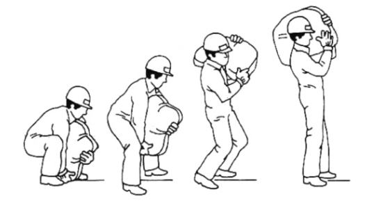

Lista desordenada
Ordena los siguientes pasos en el orden correcto para llevar a cabo una correcta manipulación manual de cargas.
- Aproximarse a la carga lo máximo posible.
- Doblar siempre las piernas, nunca arquear el tronco.
- Asegurar bien el agarre de la carga.
- Levantar la carga repartiendo el esfuerzo entre las piernas y los brazos.
- Durante el desplazamiento, acercarse al cuerpo la carga y estirar totalmente los brazos.
- Nunca realizar giros del tronco con la carga levantada, se han de mover los pies.
- Evitar manipular la carga estáticamente y girar el tronco al mover cargas por encima de los hombros.
- Emplear el peso del cuerpo para el desplazamiento de cargas pesadas y aprovechar la inercia de la carga.